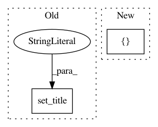

3d6f2ae489176838ba22d7ce0dd136962f115b48,lib/matplotlib/tests/test_constrainedlayout.py,,test_constrained_layout8,#,177
Before Change
ax.set_ylabel("")
if j < 1:
ax.set_xlabel("")
ax.set_title("")
j = 0
for i in [1]:
ax = fig.add_subplot(gs[j, i])
axs += [ax]
After Change
if j == 0:
ilist = [1]
else:
ilist = [0, 4]
for i in ilist:
ax = fig.add_subplot(gs[j, i])
axs += [ax]
pcm = example_pcolor(ax, fontsize=9)
In pattern: SUPERPATTERN
Frequency: 4
Non-data size: 2
Instances
Project Name: matplotlib/matplotlib
Commit Name: 3d6f2ae489176838ba22d7ce0dd136962f115b48
Time: 2018-03-08
Author: jklymak@gmail.com
File Name: lib/matplotlib/tests/test_constrainedlayout.py
Class Name:
Method Name: test_constrained_layout8
Project Name: rtavenar/tslearn
Commit Name: d6e0fa2abbc9820d294589d6ab6be1b12024f7f2
Time: 2020-06-07
Author: romain.tavenard@univ-rennes2.fr
File Name: tslearn/docs/examples/classification/plot_shapelet_distances.py
Class Name:
Method Name:
Project Name: scikit-multiflow/scikit-multiflow
Commit Name: 1fe68f56e51996417f982ce0a9c487f64a3b2158
Time: 2018-10-15
Author: saulomastelini@gmail.com
File Name: src/skmultiflow/visualization/evaluation_visualizer.py
Class Name: EvaluationVisualizer
Method Name: __configure
Project Name: scikit-learn-contrib/imbalanced-learn
Commit Name: 153f6e0ff5729fc22b68d5f6e0fd05edf96d8c2c
Time: 2019-11-17
Author: g.lemaitre58@gmail.com
File Name: examples/datasets/plot_make_imbalance.py
Class Name:
Method Name: